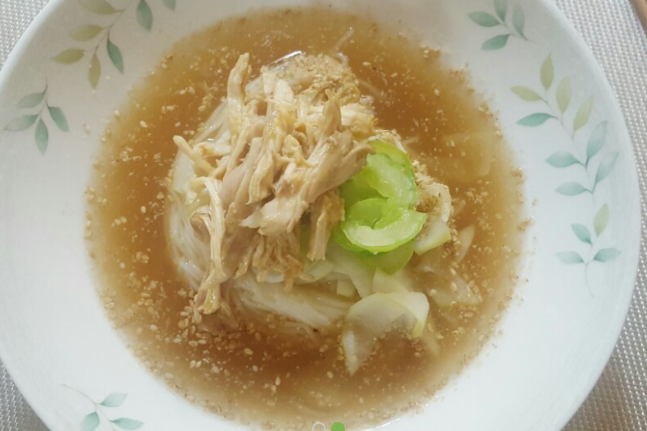

여름철 시원한 초계국수 만들기 :D

여름철 무더위가 다가오면서 입맛 없이 축축 처지는 몸을 이겨내기 위한 보양식 메뉴가 생각나는데요.
흔히 먹는 삼계탕이나 냉면 외에도 양지 육수에 쫄깃한 국수를 말아 닭가슴살을 듬뿍 얹은 새콤달콤한 초계국수가 지금 딱!!
초계국수의 닭가슴살은 지방 함량이 가장 낮고 담백질 함량이 가장 놓은 닭고기 부위로
메티오닌을 비롯한 필수 아미노산이 쇠고기보다 많아 간에도 좋은 음식입니다. 여름철 보양식으로 제격이죠.
그럼 바로 초계국수 만드는 법을 알려드리겠습니다 :)
초계국수 재료
삶을 때 재료 : 닭가슴살 1kg(약 8~10조각), 물 2L, 쌍화탕 1병, 마늘 5알, 양파 1/2개, 대파 1/2개, 청주(또는 맛술) 4큰술
국수 재료: 국간장 1큰술, 식초 3큰술, 겨자 1작은술, 참기름 1큰술, 소금 1작은술, 통깨 1큰술, 소면
Tip!!: 생닭이 아닌 닭가슴살을 사용하면 손질 및 닭 삶는 시간을 단축할 수 있습니다.
닭가슴살 삶기
1. 냄비에 닭가슴살과 물을 붓고 마늘, 양파, 대파, 청주, 쌍화탕을 넣고 끓입니다. (TIP. 가정에 구비되어 있지 않은 한약재 대신 쌍화탕을 이용하여 닭 비린내를 제거하고 육수의 풍미와 깊은 맛을 더합니다)
2. 물이 끓기 시작하면 닭가슴살을 넣고 15분간 중불에서 삶다가 불을 끈 뒤 10분간 뜸을 들입니다.
3. 삶은 닭가슴살을 건져서 먹기 좋은 크기로 결대로 찢습니다.
4. 육수는 체나 면보에 걸러서 준비합니다.
국수 만들기
1. 손질한 닭가슴살에 참기름, 소금, 통깨로 기본 밑간을 합니다.
2. 닭가슴살을 삶은 육수에 국간장, 소금, 설탕, 식초, 겨자를 넣고 잘 섞은 후 냉장고나 냉동고에서 차게 식힙니다.
3. 냄비에 물을 붓고 끓인 후 소금과 소면을 넣습니다.
4. 그릇에 삶은 소면을 담고 닭고기를 올린 후 차게 식힌 육수를 부어서 완성합니다.
무더운 여름 더 간단하게 드시고 싶으신가요?? 밀키트 사러가기